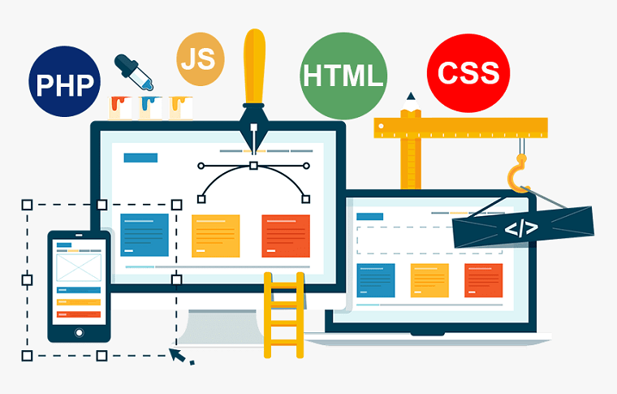

- Що значить зверстати сайт?
- Основні різновиди верстки
- Що таке верстка з точки зору підходу до роботи?
- Як вибрати верстальника?
Верстка сайтів
Верстка сайту – це відповідальний процес, без якого не обходиться жоден веб-проект. Але для того, щоб створити сайт, спочатку потрібно розробити якісний макет, в якому будуть враховані і затверджені всі нюанси.
Що значить зверстати сайт?
Це складний вид робіт, який передбачає бездоганне знання JavaScript, HTML і CSS – три кити, на яких заснована робота верстальника. HTML – це мова розмітки і основа будь-якої веб-сторінки. З його допомогою вдається створити каркас сайту, розташувавши в потрібному місці необхідні текстові елементи. Далі за роботу береться CSS – відповідає за візуальну складову. Використовуючи HTML і CSS вдається створити статичну сторінку, але, щоб вдихнути в проект життя, необхідна допомога JavaScript. Він дає сайту можливість реагувати на певні дії користувачів, роблячи його динамічним.
Професійна верстка сайту передбачає використання різних інструментів, регулярне тестування продукту і перевірку помилок. Найменший недолік може призвести до збою і некоректної роботи ресурсу. Але якщо буде виконана правильна робота, то ви отримаєте наступні переваги:
- швидке завантаження сторінок – грамотне програмування впливає на швидке відображення контенту. Чим вище швидкість, тим краще конверсія, так як користувач не встигне піти до конкурента в очікуванні завантаження сайту;
- проста підтримка – коли код правильно структурований і містить коментарі, то його підтримкою зможуть займатися інші фахівці, вносити різні зміни і не витрачати на це багато часу;
- коректна робота сайту – належне виконання функцій та відображення всіх елементів.

Веб-верстка сайту на WordPress: основні різновиди
Існує кілька основних видів верстки, серед них виділяють такі:
- таблична – те, з чого почалася епоха сайтобудування. Цей метод передбачає використання різних комірок, наповнених інформацією. Мінус в тому, що для відображення сайту, потрібно дочекатися, коли прогрузиться вся таблиця. Якщо код масивний і було використано багато інформації, то цей процес може зайняти багато часу;
- блокова – більш сучасний і універсальний різновид. Блоки представляють собою незалежні елементи, які можна легко міняти місцями, що відкриває безмежні можливості для верстальника. Це дуже зручно, наприклад, якщо футер, шапка сайту або будь-який інший елемент потребує доопрацювання;
- пошарова – тут верстка сторінок це масштабна робота. Даний метод подобається дизайнерам, так як він не обмежує фантазію для створення різноманітних ефектів. Але з технічної точки зору він складно реалізується і відрізняється нестабільністю. Тут потрібне глибоке знання мов і технологій програмування. Але навіть це не гарантує те, що один і той же сайт буде по-іншому відображатися на різних пристроях і в різних браузерах;
- адаптивна – найпопулярніший метод, який сьогодні активно використовується. Він дозволяє підлаштувати сайт під будь-який пристрій.
Потрібно відзначити, що зараз жоден з перерахованих різновидів верстки не втратив своєї актуальності. Більше того, ці методи не використовуються самостійно, а ефективно комбінуються професійними розробниками один з одним.
Що таке верстка сайту з точки зору підходу до роботи?
В ідеалі верстка повинна бути кросбраузерною, мати чітку структуру, всі елементи повинні бути прописані, а код – зрозумілий і не містити помилок. Це можна вважати короткою відповіддю на питання – що таке верстка веб сайту? Не менш відповідальний момент – вибір виконавця.

Як вибрати верстальника?
Якщо вам потрібен лендінг, односторінковий сайт, інтернет-магазин або більш складний і нетиповий проект, то при будь-яких обставинах потрібно звертатися до професіоналів з хорошою репутацією і портфоліо. Це є гарантією того, що всі умови будуть виконані в чітко обумовлені терміни. Ви заощадите час і отримаєте якісний продукт.